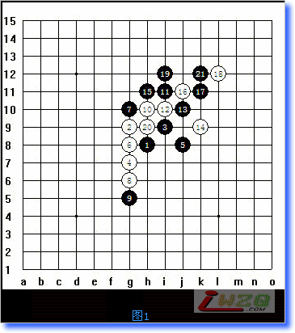
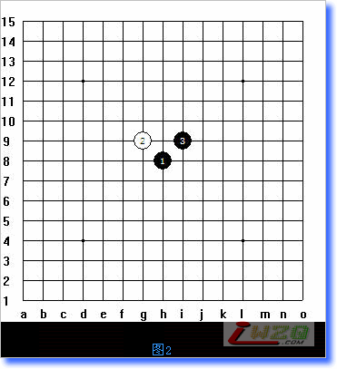
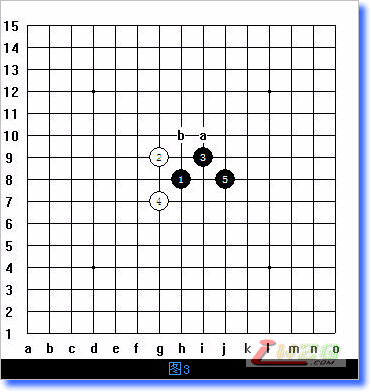
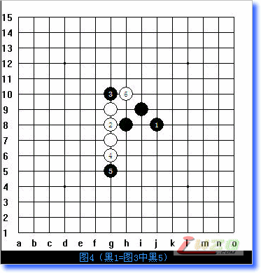
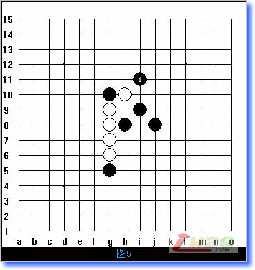
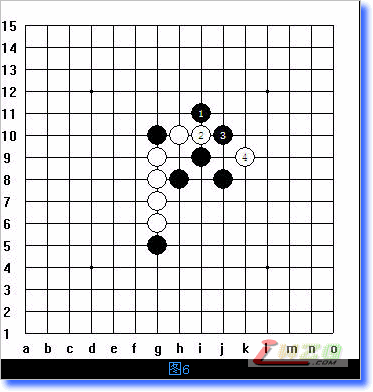
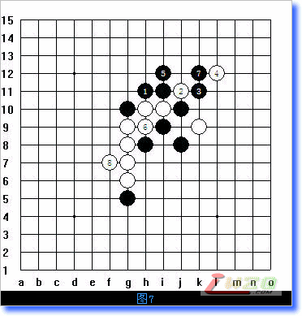

连珠新手入门常见问题
#1 连珠新手入门常见问题 作者：有志青年 发表时间：2007-8-5 13:21:24

这是我旁观的一个网络实战对局，向这样的对局在新手中几乎随处可见，这里摘录这个棋谱来说明一下新手常见的一些错误以及五子棋的基础要领。
一、我们先来看一下开局：

我们知道在五子棋里黑1落天元，白2确定是直止打法还是斜止打发，然后黑3手的落点确定开局，从上图中我们可以看到这是一个蒲月的开局。
蒲月是必赢的开局，为什么必赢，不在这里赘述。

图3中我们可以看到，白4后，黑5出了问题，蒲月这个白4后，黑有5手两打必胜点a、b。当然作为初学五子棋的新手，自然不一定知道这两点，我们可以理解，因此尽管黑5手是典型错误，但对于新手来讲我们说是可以原谅的的错误。
但图3中的黑5出来以后，初学者的基本问题就出现了，以前我们介绍过，五子棋有几个基本原则：
1、开局抢二
针对图5的黑5，我们可以理解为开局抢2。通俗的说就是怎么形成的活2最多我们就怎么走。
2、怎么走不能形成反就怎么走。
针对这一原则来说，黑5的问题就出来了，因为黑5后，白棋可以不应，而在G8位成3，迫使黑来应白，暂且不谈这个是不是正确的走法，我们只对最最基础的问题做一个剖析。所以说这手黑5走的就没有道理。没有道理的棋自然也就自己说不服自己，说不服自己就是乱走的棋。那么我们也可以说是没有意义的棋——废子。
这是新手第一个常见的问题——毫无意义的落子。

果然白2不应而是成三，黑三挡在上边，白4冲4。
白4冲4也是初学者经常犯的一个问题，就是有事没事喜欢冲4，从图5中我们可以清楚的看到，黑5断后与黑1就形成了可联系的线位，就是白冲4的结果，假如白4不冲4自然就不可能有黑5，也不可能形成黑5与黑1遥相呼应的这个“2”。因为从后边的发展来说，白6是必然要走的一手，而与白4是否冲4没有必然的联系，既然没有必然的联系，而且这个白4冲的没有任何意义，不仅仅对自己不利而且还把对方的子力做厚了，那么何必要冲？这就是
新手常见的第二个问题——毫无意义的冲四。
下边我们来说
新手常见的第三个问题——缺乏功防转换的意识

图5中，白落H10后，本是一个黑获得先手的机会，因为白仅仅是形成了一个在G9H10形成的活2，而黑完全可以不应白而直接从防守转为进攻。但黑却仍然采用防守来应付局面。

随后白2中间断，黑3连眠三，白4应黑斜活2。这一来一往就更叫人感觉莫名其妙了，白2中间断，位置不好，是新手的判断问题，可以理解，黑3成眠三也还将就，白4应斜2什么意思？如果黑下一手走J11然后再K11岂不成了“两手胜”了么？
白4的应点纯粹没有道理，在看到这手落子的时候，时间很快，根本没有思考，所以这是
新手经常出现的第四个问题——下棋不动脑

图7后黑的行棋更叫人感觉莫名其妙，不走J11而走在H11，无论是下有禁手的还是无禁手的都叫人感觉不可思意。因为如果是有禁的，那么J11、K11就结束了，如果是无禁的也可以K11、J11，因为J11是最明显的黑成三的位置。
再接下来，图7中白2断同时反跳活三，黑冲4，白应，黑5成三，白却成了活四。这是
新手常见的第五个问题——下棋不管对方。
只管自己而视同对手不存在。
这是实战对局中两个刚学五子棋的朋友走的一个对局，确切的说他们还不会下五子棋，做这个点评实在没有什么价值，但毕竟处在这一技术阶段的朋友在五子棋的爱好者中占有相当大的一定比例，所以写出来，供想学五子棋但还不懂五子棋的朋友参考。
［ 掌棋宣传员 于 2010-8-6 23:07:40 时花20金币送鲜花一朵］
#2 Re:连珠新手入门常见问题 作者：5子~学遥 发表时间：2007-8-5 16:29:06
恩！恩！恩！讲的好啊！！
#3 Re:连珠新手入门常见问题 作者：wuzi 发表时间：2007-8-6 1:18:07
呵呵，讲得好，拿来给有心学五子棋的选择那是再好不过了，
#4 Re:连珠新手入门常见问题 作者：xr__ 发表时间：2007-8-25 19:39:11
嘿嘿，我家小孩就喜欢这么走！#5 Re:连珠新手入门常见问题 作者：caike 发表时间：2007-9-20 10:49:45
不错，总结经验还是有帮助的！！
#6 Re:连珠新手入门常见问题 作者：sjdang 发表时间：2007-9-21 10:09:17
不错，总结经验还是有帮助的！！
#7 Re:连珠新手入门常见问题 作者：零点 发表时间：2007-11-13 12:12:07
是啊，我开始学下的时候就是这样的。不懂啊。#8 Re:连珠新手入门常见问题 作者：神秘幽灵 发表时间：2009-11-21 19:07:42
thank a lot!#9 Re:连珠新手入门常见问题 作者：法源海 发表时间：2009-11-27 19:45:31
入门之师呵.#10 Re:连珠新手入门常见问题 作者：钱振鹏 发表时间：2010-1-20 23:46:52
h11 让人看了想吐血#11 Re:连珠新手入门常见问题 作者：寒星溪月 发表时间：2010-1-30 16:32:46
恩恩，这个帖子给我提了个醒
有时候我一不注意还是会犯低级错误的
#12 Re:连珠新手入门常见问题 作者：春天花会开 发表时间：2010-3-10 16:40:01
我也是乱下 哈哈 谢谢啦#13 Re:连珠新手入门常见问题 作者：我爱上了你 发表时间：2010-8-6 20:27:10
我也是。。。谢谢#14 Re:连珠新手入门常见问题 作者：霸王龙 发表时间：2010-8-8 9:23:34
哎 新手就是这样#15 Re:连珠新手入门常见问题 作者：空字杀手 发表时间：2011-1-22 22:00:47
这五个问题我全占了，啊门#16 Re:连珠新手入门常见问题 作者：茳湖 发表时间：2011-6-23 8:36:48
讲得好，受教了！#17 Re:连珠新手入门常见问题 作者：灿尔哈察苏 发表时间：2011-7-9 9:59:22
呵呵 偶也是这样滴！！#18 Re:连珠新手入门常见问题 作者：小皮球 发表时间：2012-7-15 14:58:24
浅显易懂，很多没有学习过的人都这样下的#19 Re:连珠新手入门常见问题 作者：东方彩虹 发表时间：2012-9-19 12:50:25
确实是初下时就是这样#20 Re:连珠新手入门常见问题 作者：尼克 发表时间：2012-9-23 12:55:23
讲得真好，收藏之。
#21 Re:连珠新手入门常见问题 作者：裁决殿雪月 发表时间：2012-9-27 12:32:10
07年的帖子，那时我二十岁，多么年轻啊！多么青春啊！
当然现在我也不算老！
呵呵
#22 Re:连珠新手入门常见问题 作者：后期 发表时间：2013-2-20 12:50:29
讲的很用心，受用。#23 Re:连珠新手入门常见问题 作者：我要做棋王 发表时间：2013-3-19 15:14:28
真是收益非签